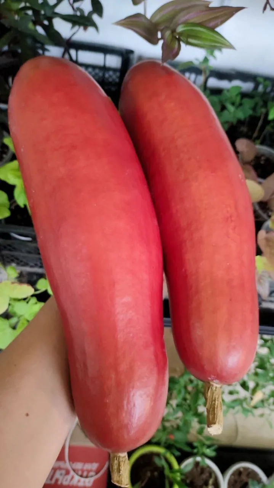
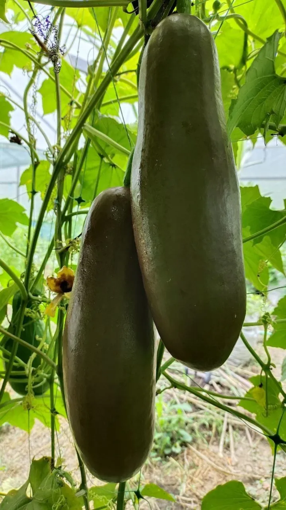

Единственная в своём роде тыква-лиана из Южной Америки с крупными ароматными плодами. Выращивается как однолетник в тёплых регионах.
Преимущества культуры для вашего участка.
Каждый сорт уникален — от формы до вкуса.
Сикана в разные сезоны: от всходов до сбора урожая.


Всё, что нужно знать о культуре: от посадки до хранения.
Сикана — экзотическая лиана, требующая тепла и длительного сезона для созревания плодов. В условиях России выращивается как однолетник через рассаду.
Выращивание возможно только через рассаду и преимущественно в теплице. В открытом грунте урожай можно получить только в южных регионах с длинным тёплым периодом.
Мякоть сладковатая с характерным мускусным ароматом. Вкус напоминает смесь дыни и тыквы с пряными нотками.
В условиях России сикана выращивается как однолетник, так как не переносит зимних заморозков. В тропическом климате — многолетняя лиана.
Да, необходима крепкая опора, так как лиана вырастает до 15 м, а плоды имеют значительный вес.
Посадочный материал из коллекции Batatchudo и рекомендации по выращиванию.